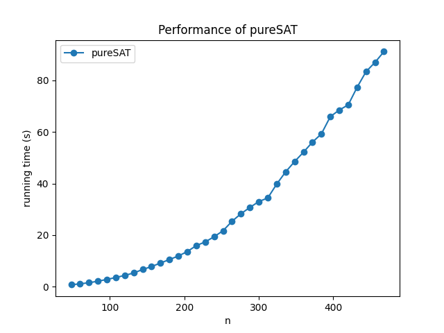

Lab1¶
SAT/SMT¶
SAT 问题：给定一个表达式 \phi，它是可满足的（satisfiable）吗？
SMT 问题：SAT 的拓展，允许出现数字和不等式。
求 NQueens 的一个可行解¶
使用 SMT¶
定义：Q[1..n]，Q[i]=j 表示在第 i 行第 j 列放置了皇后
约束条件：
- 取值合法：\forall i\in[1..n],Q[i]\in[1..n]，即
[And(1 <= Q[i], Q[i] <= n) for i in range(n)] - Q[1..n] 各不相同，即
[Distinct(Q)] - 对任意的两个皇后 Q[i],Q[j]，首先不能有 i=j；然后，如果它俩在一条主对角线上，说明 i+Q[i]=j+Q[j]；如果它俩在同一副对角线上，说明 i+Q[j]=j+Q[i]，即
[If(i==j, True, And(i+Q[i]!=j+Q[j], i+Q[j]!=j+Q[i])) for i in range(n) for j in range(i)]
使用 pureSAT¶
定义：Q[1..n][1..n]，每一个都是布尔变量，Q[i][j]=\text{True} 表示在第 i 行第 j 列放置了皇后。
约束条件：
- 每行有且仅有一个皇后（使用 z3 的
PbEq）
- 每列有且仅有一个皇后
- 每个主副对角线上，最多有一个皇后（使用 z3 的
AtMost）
给求解器 sol = Solver() 添加上面所有约束，即可求解，有解时解放在 sol.model() 中。
求解性能对比¶
指标：求出一组解所需要的时间（单位：秒）
求解规模范围；n=[4..50]，每个规模求解三次取平均值
当 n 在此范围内增大时，pureSAT 方法所需的时间缓慢增加，但始终小于 1.5 秒，维持在较低水平；SMT 方法在 n 较大时所需的时间指数形增加。
pureSAT 看起来可以在能够接受的时间内解决更大规模的问题，测试如下：

可见 pureSAT 在 NQueens 的求解性能上比 SMT 好。
代码使用文档¶
求解这个问题的代码是以性能测试的方式保存的，主函数将生成 求解性能对比 一节中第二幅图。
函数 NQueens_SMT(n) 是用 SMT 求解 n 皇后问题的代码，因为只做性能测试，不关心解的情况，这个函数不返回解也不打印解，只断言问题是 sat 的；函数 NQueens_pureSAT(n) 是用 pureSAT 求解 n 皇后问题的代码，与 SMT 方法格式类似。
使用 pureSAT 求解 d=a-b¶
解决 a+b 问题¶
在 a+b 问题中，我的解决思路如下：
- 将 a,b 转化成二进制字符串（利用
bin(a)[2:]），然后利用zfill填充高位 0 至两数对齐，额外加一位 0 方便计算进位，记此时的位数为 n，然后反转 a,b 的字符串以方便用自然顺序处理问题 - 新建 a=\text{Bool}[1..n]，如果 \text{a\_str}[i]==1，则添加约束 a[i]，否则添加 \neg a[i]，b 也类似处理
- 新建 c=\text{Bool}[1..n]，添加约束 \neg c[1]，然后对 i\in[2..n]，添加约束 c_{i}\leftrightarrow((a_{i-1}\wedge b_{i-1})\vee(a_{i-1}\wedge c_{i-1})\vee(b_{i-1}\wedge c_{i-1}))
- 新建 d=\text{Bool}[1..n]，对 i\in [1..n]，添加约束 d_i\leftrightarrow(a_i\leftrightarrow(b_i\leftrightarrow c_i))
- 开始求解，并显示结果
转化 a-b 问题¶
求解 d=a-b 问题可以转化为 a=d+b 问题（暂时重命名为 d'=a'+b 问题，这样可以避免修改之前写的复杂的约束式子），这里 d' 和 b 是已知的，只需要求解 a'。这只需要稍微修改一下约束条件就可以。与上面不同的步骤思路如下：
-
新建 a=\text{Bool}[1..n]，暂时不做约束，b 要约束，和上面（a+b 问题）相同处理
-
新建 d=\text{Bool}[1..n]，对 i\in [1..n]，添加约束 d_i\leftrightarrow(a_i\leftrightarrow(b_i\leftrightarrow c_i))；并且，如果 \text{a\_str}[i]==1，则添加约束 d[i]，否则添加 \neg d[i]
只需修改上面两个步骤，即可获得正确解答。
代码使用文档¶
求解这个问题的代码支持在命令行测试，文件名为 lab_1_2.py，支持如下两种命令：
$ python3 lab_1_2.py plus 888 777 # 将调用 calculate_a_plus_b(888, 777)
$ python3 lab_1_2.py minus 888 777 # 将调用 calculate_a_minus_b(888, 777)
每条指令倒数两个数是操作数 a,b，减法需要保证 a\ge b，执行后将在命令行打印结果：
$ python3 main.py plus 888 777
The sum of 888 and 777 is 1665
$ python3 main.py minus 888 777
The difference between 888 and 777 is 111